RetinoMapper Class
Document version:1.0
Author(s):Sven Gijsen
Date:July 2015
Introduction
The Experiment Manager Plug-in features a RetinoMapper class (derived from the ExperimentEngine class) that is created and optimized for displaying various Retinotopy stimuli. Configuration of these stimuli can be achieved through various available parameters that are described in this document.
Retinotopy Parameters
Retinotopy Pattern
There are various Retinotopy Parameters that can be configured for an object created from a RetinoMapper class, most parameters availability is dependend of another parameter and so not all of them are in use during the retinotopy stimuli presentation. In this document we'll split up and describe the parameter groups that depend on the Retinotopy pattern (RetinoPattern parameter) seperately. The available Retinotopy patterns are:
- Fixation
- PolarAngle
- Eccentricity
- MovingBar
- MovingDots
Universal parameters
Some of the parameters are always available for you to configure (independent of the Retinotopy pattern you choose), these are:
| Name | Type | Restrictions | Default | Description |
|---|---|---|---|---|
| RetinoPattern | String | "PolarAngle", "Eccentricity", "MovingBar", "MovingDots" or "Fixation" | "PolarAngle" | the Retinotopy stimuli pattern we would like to display |
| StimuliRefreshRate | Integer | 0..display refresh rate | 0 | If 0 then it draws as fast as possible (if present waiting for a vertical sync signal). If >0 then the stimuli refresh rate (in Hertz) is synchronized with that value. |
| ShowFixPoint | Boolean | "true" or "false" | "true" | if the fixation point in the center of the screen is visible |
| FixationSize | Integer | >=0 | 8 | the diameter of the fixation point in number of pixels |
| FixationColor | String | see Color Format chapter | "#FF0000" | the color of the fixation dot, see Color Format chapter |
| BackGroundColor | String | see Color Format chapter | "#575757" | the color of the background, see Color Format chapter |
| StimulusWidthSpan | Float | >0 | 480 | the width of the retinotopy stimuli area |
| StimulusHeightSpan | Float | >0 | 480 | the height of the retinotopy stimuli area |
| AntiAliasing | Boolean | "true" or "false" | "true" | if anti-aliasing should be enabled for the retinotopy stimuli |
Color Format
The format specifies the RGB value for the color, which may be in one of these formats:
- #RGB (each of R, G, and B is a single hex digit) or #RRGGBB or #RRRGGGBBB or #RRRRGGGGBBBB.
- A name from the list of colors defined in the list of SVG color keyword names provided by the World Wide Web Consortium; for example, "steelblue" or "gainsboro". These color names work on all platforms.
Fixation specific parameters

The above picture shows stimuli presentation where the Fixation RetinoPattern parameter is used. The retinotopy stimuli area (in grey) is smaller than the screen (black) output area. Within the retinotopy stimuli area we can see a fixation point (red). There are no further parameters defined which only belong to this Fixation RetinoPattern.
PolarAngle specific parameters
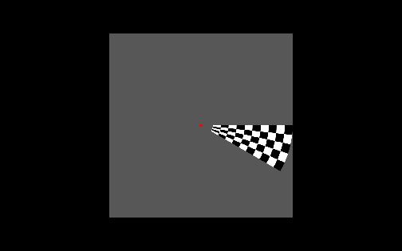
The above picture shows a stimuli presentation where the PolarAngle RetinoPattern parameter is used. It's the same as the Fixation RetinoPattern plus an additional wedge consisting of different rings with checkers that can rotate around the center point. A full wedge rotation (360 degrees) is called one cycle. Special parameters that belong to this PolarAngle RetinoPattern are:
| Name | Type | Restrictions | Default | Description |
|---|---|---|---|---|
| GapDiameter | Integer | >=0 | 20 | the diameter (pixels) of the gap (empty circular area) centered around the fixation point |
| CheckerColor1 | String | see Color Format chapter | "#FFFFFF" | the color of the first checker color group |
| CheckerColor2 | String | see Color Format chapter | "#000000" | the color of the second checker color group |
| PolarCheckAmount | Integer | >0 | 4 | the number of checkers inside the wedge along the wedge rotation direction |
| PolarRingAmount | Integer | >0 | 20 | the number of rings inside the wedge along the wedge direction |
| PolarWedgeSpan | Float | >0 | 22.5 | the total wedge span angle in degrees |
| PolarRotationDirection | Integer | 1 or -1 | 1 | the rotation direction of the wedge, 1 = Clockwise, -1 = Counterclockwise rotation |
| InternalTriggerDuration | Float | >0 | 2000.0 | the expected internal trigger period time duration, this defines how fast the wedge rotates within one step of a cycle |
| CycleTriggerAmount | Integer | >0 | automatically set to the Internal Triggers setting of the current block | the duration of a full wedge cycle (360 degrees) in number of internal triggers |
| FlickrFrequency | Float | >0 | 5 | the frequency of the flicker cycle (when the checker categories switch from color), ideally this value is equal to the StimuliRefreshRate parameter divided by an integer value |
| CorticalMagnitudeFactor | Float | >=0 | 0.2 | see Cortical Magnitude Factor chapter |
| DisableCortMagFac | Boolean | "true" or "false" | "false" | when enabled the single ring diameters (see A in below picture) is the same for all rings, the CorticalMagnitudeFactor parameter is then automatically ignored |
| OutputTriggerFrame | Boolean | "true" or "false" | "false" | when enabled then the Experiment manager saves a retinotopic stimuli display (to the /outputs directory) for each stimuli step to a file, see the RetinoMapper Output Export chapter. Please bear in mind that enabling this option may dramatically slow down the experiment and may cause that the requested StimuliRefreshRate is not met! |
| OutputFrameFormat | String | ‚??PNG‚?ù, ‚??DAT‚?ù or ‚??CDAT‚?ù | "DAT" | if the OutputTriggerFrame parameter is enabled then this value specifies the output format (and extension) for the saved file(s). “PNG” creates a standard (*.png) file format containing the retinotopy stimuli area. See the chapter about Output Frame Format for an explanation about the DAT and CDAT format |
| OutputFrameType | String | ‚??Frame‚?ù or ‚??Mask‚?ù | "Frame" | if the OutputTriggerFrame parameter is enabled then this value specifies the output frame type. Option ‚??Frame‚?ù outputs the active stimuli area with all color information. Option ‚??Mask‚?ù outputs the active stimuli area black and the full wedge and/or fixation point as white |
| DiscreteTriggerSteps | Boolean | "true" or "false" | "false" | if true then the wedge rotates in discrete steps at each trigger step. Between two triggers the wedge holds its position |
| RandomizeTriggerSteps | Boolean | "true" or "false" | "false" | if true then the wedge start rotating randomly at each trigger step. Between two triggers the wedge moves smooth (only when DiscreteTriggerSteps is disabled) in the PolarRotationDirection. The randomization makes sure that all rotation steps are performed once before going to the next cycle |
| EmptyTriggerSteps | Integer | >=0 | 0 | this parameter defines how many Trigger Steps of a full cycle should be Empty (the Wedge is then hidden!). These Empty trigger steps are randomly choosen. The randomization keeps the history of empty trigger steps in memory within each block trial |
| RandomizeTriggerStepsArray | Integer Array | a String containing one or more index positions seperated by a comma, like "2,4,6,8" | "" (empty string) | this parameter is only taken into account if the RandomizeTriggerSteps parameter is set to true. The default randomization is overridden by the value(s) defined here seperated by a comma. Each value refers to a specific index of the stimuli |
| EmptyTriggerStepsArray | Integer Array | a String containing one or more index positions seperated by a comma, like "2,4,6,8" | "" (empty string) | This parameter is only taken into account if the EmptyTriggerSteps parameter is set to true. The default randomization is overridden by the value(s) defined here seperated by a comma. Each value refers to a specific index of the stimuli |
Wedge triggered cycles and rotation direction
The below picture shows the wedge rotated at an angle of 0 degrees (at the X axis pointed to the right, with the right wedge border aligned over the X axis) when the PolarRotationDirection parameter is set to -1 (=Counterclockwise).

When the PolarRotationDirection parameter is set to 1 (=Clockwise) then the wedge at an angle of 0 degrees is drawn like in the below picture.

A full wedge cycle is internally subdivided by the CycleTriggerAmount parameter. These steps can be randomized (see RandomizeTriggerSteps parameter) and empy (see EmptyTriggerSteps parameter) as explained in the above parameter table. Internally these sub-cycles are indexed from [0 ... (CycleTriggerAmount-1)]. The first index (with value 0) is always at 0 degree and is dependent of the PolarRotationDirection parameter, as explained above. These indexed are internally also used to keep track of the randomly chosen history and to output the result in the experiment output file (automatically generated in the /outputs directory for each run), see the RetinoMapper Output Export chapter. The below pictures show how the different indexes are set for each step of 12 steps (CycleTriggerAmount = 12) from one full wedge rotation for both directions.
PolarRotationDirection = 1 (Clockwise)
|
Index 0 |
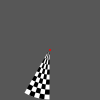 |
Index 3 |
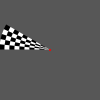 |
Index 6 |
|
Index 9 |
||||||||
|
Index 1 |
|
Index 4 |
|
Index 7 |
|
Index 10 |
||||||||
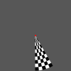 |
Index 2 |
|
Index 5 |
|
Index 8 |
|
Index 11 |


PolarRotationDirection = -1 (Counterclockwise).
|
Index 0 |
|
Index 3 |
|
Index 6 |
Index 9 |
|||||||||
|
Index 1 |
|
Index 4 |
|
Index 7 |
|
Index 10 |
||||||||
|
Index 2 |
Index 5 |
Index 8 |
|
Index 11 |
Cortical Magnitude Factor
This factor defines how the polar rings are distributed from the outer wedge ring towards the center.

If for example the CorticalMagnitudeFactor = 0.2 then:
A = 0.2 * B
A' = 0.2 * B'
...
The most inner ring is automatically extended till the border of the defined gap diameter. If the CorticalMagnitudeFactor = 0.0 then the rings are also equally divided over the wedge (B).
Eccentricity specific parameters

The above picture shows a stimuli presentation where the Eccentricity RetinoPattern parameter is used. It's again the same as the Fixation RetinoPattern plus an additional ring inside the retinotopy stimuli area in which its diameter can change (eccentricity). One cycle here means a full diameter change of the wedge. The ring consist out of several sub-ring(s) each divided in checkers of which it's color can again alternate. Again in the center of the screen a fixation point (red) is shown.

| Name | Type | Restrictions | Default | Description |
|---|---|---|---|---|
| GapDiameter | Integer | >=0 | 20 | the diameter (pixels) of the gap (empty circular area) centered around the fixation point, see mark C in the above picture |
| CheckerColor1 | String | see Color Format chapter | "#FFFFFF" | the color of the first checker color group |
| CheckerColor2 | String | see Color Format chapter | "#000000" | the color of the second checker color group |
| EccentricityCheckAmount | Integer | >0 | 20 | the number of checkers inside one sub-ring |
| EccentricityRingAmount | Integer | >0 | 4 | the number of sub-rings inside the wedge |
| FlickrFrequency | Float | >0 | 5 | the frequency of the flicker cycle (when the checker categories switch from color), ideally this value is equal to the StimuliRefreshRate parameter divided by an integer value |
| EccentricityDirection | Integer | 1 or -1 | 1 | whether the wedge diameter is increasing or decreasing, 1 = Increased ring diameter, -1 = Decreased ring diameter |
| InternalTriggerDuration | Float | >0 | 2000.0 | the expected internal trigger period time duration, this defines how fast the wedge changes its diameter within a step of an cycle |
| CorticalMagnitudeFactor | Float | >=0 | 0.2 | see Cortical Magnitude Factor chapter |
| DisableCortMagFac | Boolean | "true" or "false" | "false" | when enabled the total width of the sub-rings (see A) remains the same independent off the eccentricity, the total width of the sub-rings (see A) then is always the CorticalMagnitudeFactor times the maximum radius (see B) |
| CycleTriggerAmount | Integer | >0 | automatically set to the Internal Triggers setting of the current block | the duration of a full eccentricity cycle (increased/decreased diameter) in amount of triggers, the minimal diameter is the gap diameter, see C |
| OutputTriggerFrame | Boolean | "true" or "false" | "false" | when enabled then the Experiment manager saves a retinotopic stimuli display (to the /outputs directory) for each stimuli step to a file, see the RetinoMapper Output Export chapter. Please bear in mind that enabling this option may dramatically slow down the experiment and may cause that the requested StimuliRefreshRate is not met! |
| OutputFrameFormat | String | ‚??PNG‚?ù, ‚??DAT‚?ù or ‚??CDAT‚?ù | "DAT" | if the OutputTriggerFrame parameter is enabled then this value specifies the output format (and extension) for the saved file(s). “PNG” creates a standard (*.png) file format containing the retinotopy stimuli area. See the chapter about Output Frame Format for an explanation about the DAT and CDAT format |
| OutputFrameType | String | ‚??Frame‚?ù or ‚??Mask‚?ù | "Frame" | if the OutputTriggerFrame parameter is enabled then this value specifies the output frame type. Option ‚??Frame‚?ù outputs the active stimuli area with all color information. Option ‚??Mask‚?ù outputs the active stimuli area black and the full ring and/or fixation point as white |
| DiscreteTriggerSteps | Boolean | "true" or "false" | "false" | if true then the ring diameter changes in discrete steps at each trigger step. Between two triggers the wedge holds its position |
| RandomizeTriggerSteps | Boolean | "true" or "false" | "false" | if true then the rings diameter is choosen randomly at each trigger step. Between two triggers the ring diamater changes smoothly to the next closest diameter (only when DiscreteTriggerSteps is disabled) in the EccentricityRotationDirection. The randomization makes sure that all ring diameter steps are used once before going to the next cycle |
| EmptyTriggerSteps | Integer | >=0 | 0 | this parameter defines how many Trigger Steps of a full cycle should be Empty (the Ring is then hidden!). These Empty trigger steps are randomly choosen. The randomization keeps the history of empty trigger steps in memory within each block trial |
| RandomizeTriggerStepsArray | Integer Array | a String containing one or more index positions seperated by a comma, like "2,4,6,8" | "" (empty string) | this parameter is only taken into account if the RandomizeTriggerSteps parameter is set to true. The default randomization is overridden by the value(s) defined here seperated by a comma. Each value refers to a specific index of the stimuli |
| EmptyTriggerStepsArray | Integer Array | a String containing one or more index positions seperated by a comma, like "2,4,6,8" | "" (empty string) | This parameter is only taken into account if the EmptyTriggerSteps parameter is set to true. The default randomization is overridden by the value(s) defined here seperated by a comma. Each value refers to a specific index of the stimuli |
Cortical Magnitude Factor

This factor defines how the total width (see A) of all the visible rings compared to the eccentricity amount. This width is dependant of the eccentricity (ring diameter) at that moment (this doesn't apply when the DisableCortMagFac parameter is set to true). The smallest ring eccentricity diameter is equal to the gap diameter (see C).
E.g. CorticalMagnitudeFactor = 0.2 ==> A = 0.2 * B
All individual ring widths are equal.
Eccentricity triggered cycles and direction
A full Eccentricity cycle is internally subdivided by the CycleTriggerAmount parameter. These steps can be randomized (see RandomizeTriggerSteps parameter) and empy (see EmptyTriggerSteps parameter) as explained in the above parameter table. Internally these sub-cycles are indexed from [0 ... (CycleTriggerAmount-1)]. The indexing is dependent of the EccentricityDirection parameter. These indexed are internally also used to keep track of the randomly chosen history and to output the result in the experiment output file (automatically generated in the /outputs directory for each run), see the RetinoMapper Output Export chapter. The below pictures show how the different indexes are set for each step of 12 steps (CycleTriggerAmount = 12) from one full eccentricity cycle for both directions.
EccentricityDirection = 1 (Increasing diameter)
|
Index 0 |
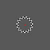 |
Index 3 |
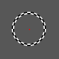 |
Index 6 |
|
Index 9 |
||||||||
|
Index 1 |
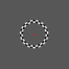 |
Index 4 |
|
Index 7 |
|
Index 10 |
||||||||
|
Index 2 |
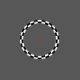 |
Index 5 |
|
Index 8 |
|
Index 11 |


EccentricityDirection = -1 (Decreasing diameter)
|
Index 0 |
|
Index 3 |
Index 6 |
|
Index 9 |
|||||||||
|
Index 1 |
|
Index 4 |
Index 7 |
|
Index 10 |
|||||||||
|
Index 2 |
Index 5 |
Index 8 |
|
Index 11 |
MovingBar specific parameters

The above picture shows a stimuli presentation where
the MovingBar RetinoPattern parameter is used.It's the same as
the Fixation RetinoPattern plus an additional bar consisting of
different sub-bar(s) that can move within the
retinotopy stimuli area. Each sub-bar
consists out of several checkers with an alternating
color along its lenght (see below A). A full bar movement
(see below C direction) is called one
cycle. The moving bar has a set angle which
remains the same during one cycle. Special parameters that belong to this
MovingBar
RetinoPattern are:
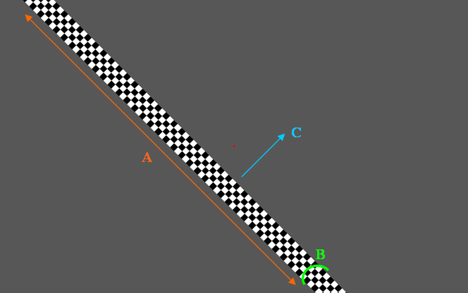
| Name | Type | Restrictions | Default | Description |
|---|---|---|---|---|
| CheckerColor1 | String | see Color Format chapter | "#FFFFFF" | the color of the first checker color group |
| CheckerColor2 | String | see Color Format chapter | "#000000" | the color of the second checker color group |
| MovingBarHeight | Float | >0 | 10.0 | if for example the total bar movement is 640 pixels and this parameter is set to 10.0 then the total bar height (see B above picture) is 640/10.0 = 64 pixels |
| MovingBarHeightCheckAmount | Integer | >0 | 4 | the number of sub-bar(s) in the height direction of the bar (see B above picture), the number of checkers in the bar width direction (see A) is then automatically calculated making sure that the checkers are perfect square. |
| FlickrFrequency | Float | >0 | 5 | the frequency of the flicker cycle (when the checker categories switch from color), ideally this value is equal to the StimuliRefreshRate parameter divided by an integer value |
| MovingBarDirection | Integer | 1 or -1 | 1 | The movement direction od the bar within one cycle, 1 = Downwards, -1 = Upwards |
| MovingBarAngle | Float | >0 | 45.0 | the angle of the bar, 0 degrees is along the X axis. A larger value turns the bar counterclockwise |
| MovingBarCoverage | Float | >0 | 0.5 | the covered area in which the moving bar can move within one full cycle. See chapter MovingBarCoverage for a detailed description |
| InternalTriggerDuration | Float | >0 | 2000.0 | the expected internal trigger period time duration, this defines how fast the bar moves within each step of an cycle |
| CycleTriggerAmount | Integer | >0 | automatically set to the Internal Triggers setting of the current block | the duration of a full bar movement cycle in amount of triggers |
| OutputTriggerFrame | Boolean | "true" or "false" | "false" | when enabled then the Experiment manager saves a retinotopic stimuli display (to the /outputs directory) for each stimuli step to a file, see the RetinoMapper Output Export chapter. Please bear in mind that enabling this option may dramatically slow down the experiment and may cause that the requested StimuliRefreshRate is not met! |
| OutputFrameFormat | String | ‚??PNG‚?ù, ‚??DAT‚?ù or ‚??CDAT‚?ù | "DAT" | if the OutputTriggerFrame parameter is enabled then this value specifies the output format (and extension) for the saved file(s). “PNG” creates a standard (*.png) file format containing the retinotopy stimuli area. See the chapter about Output Frame Format for an explanation about the DAT and CDAT format |
| OutputFrameType | String | ‚??Frame‚?ù or ‚??Mask‚?ù | "Frame" | if the OutputTriggerFrame parameter is enabled then this value specifies the output frame type. Option ‚??Frame‚?ù outputs the active stimuli area with all color information. Option ‚??Mask‚?ù outputs the active stimuli area black and the full bar and/or fixation point as white |
| DiscreteTriggerSteps | Boolean | "true" or "false" | "false" | if true then the bar movement changes in discrete steps at each trigger step. Between two triggers the bar moves smoothly untill the next closest position |
| RandomizeTriggerSteps | Boolean | "true" or "false" | "false" | if true then the bar movement starting position is choosen randomly at each trigger step. Between two triggers the bar still moves smoothly to the next closest diameter if the DiscreteTriggerSteps is disabled in the EccentricityRotationDirection/. The randomization makes sure that all bar movement starting positions for each step are used once before going to the next cycle |
| EmptyTriggerSteps | Integer | >=0 | 0 | this parameter defines how many Trigger Steps of a full cycle should be Empty (the Bar is then hidden!). These Empty trigger steps are randomly choosen. The randomization keeps the history of empty trigger steps in memory within each block trial |
| RandomizeTriggerStepsArray | Integer Array | a String containing one or more index positions seperated by a comma, like "2,4,6,8" | "" (empty string) | this parameter is only taken into account if the RandomizeTriggerSteps parameter is set to true. The default randomization is overridden by the value(s) defined here seperated by a comma. Each value refers to a specific index of the stimuli |
| EmptyTriggerStepsArray | Integer Array | a String containing one or more index positions seperated by a comma, like "2,4,6,8" | "" (empty string) | This parameter is only taken into account if the EmptyTriggerSteps parameter is set to true. The default randomization is overridden by the value(s) defined here seperated by a comma. Each value refers to a specific index of the stimuli |
Moving Bar Coverage

We see above inside a full screen area(see total grey area) an retinotopy stimuli area (see marker B, the red rectangle) covering the diagonal B. The bar is at its first initial position (first step of a full cycle) and moves along the direction of the yellow arrow(see marker A) until it reaches the orange border above the fixation dot and then the full cycle is complete. The MovingBarCoverage parameter defines the full cycle movement (independent of the MovingBarAngle parameter) in such way that:
A = MovingBarCoverage * B
MovingBar triggered cycles and MovingBar direction
A full MovingBar cycle is internally subdivided by the CycleTriggerAmount parameter. These steps can be randomized (see RandomizeTriggerSteps parameter) and empy (see EmptyTriggerSteps parameter) as explained in the above parameter table. Internally these sub-cycles are indexed from [0 ... (CycleTriggerAmount-1)]. The indexing is dependent of the MovingBarDirection. These indexed are internally also used to keep track of the randomly chosen history and to output the result in the experiment output file (automatically generated in the /outputs directory for each run), see the RetinoMapper Output Export chapter. The below pictures show how the different indexes are set for each step of 12 steps (CycleTriggerAmount = 12) from one full bar movement.
MovingBarDirection = 1(downwards), MovingBarAngle = 30
|
Index 0 |
|
Index 3 |
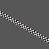 |
Index 6 |
|
Index 9 |
||||||||
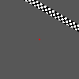 |
Index 1 |
|
Index 4 |
|
Index 7 |
|
Index 10 |
||||||||
|
Index 2 |
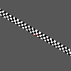 |
Index 5 |
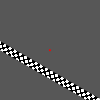 |
Index 8 |
|
IndexIndex 11 |


MovingBarDirection = -1(upwards), MovingBarAngle = 30
|
Index 0 |
Index 3 |
Index 6 |
|
Index 9 |
||||||||||
|
Index 1 |
|
Index 4 |
|
Index 7 |
Index 10 |
|||||||||
|
Index 2 |
Index 5 |
|
Index 8 |
|
Index 11 |
MovingDots specific parameters
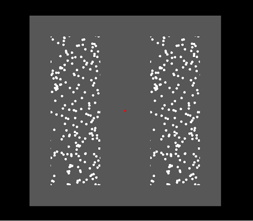
The abThe above picture shows a MovingDots screen example. Within the active
retinotopy stimuli area (grey) several dots are presented
inside two areas (Hemifields). These dots can move around when they leave the Hemifield they automatically appear again
in the opposite corner moving with the same speed and direction/angle making sure that the amount of visible dots remains
constant. In the above example the left and right hemifields are visible and divided by a distance from each other. Both
Hemifields contain the dots at the same position (They are identical). The distance between the hemifields could also be
made zero which would create one area with the dots smoothly moving from one area to the other. Again in the center of
the screen a fixation point (red) is shown.

| Name | Type | Restrictions | Default | Description |
|---|---|---|---|---|
| MovingDotsColor | String | see Color Format chapter | "#FFFFFF" | the color of the moving dots |
| MovingDotsMinMoveSpeed, MovingDotsMaxMoveSpeed | Float | >0 | 4.0 | the minimal and maximal movement speed of the Dots in Pixels/StimuliRefreshRate,, if your computer is fast enough too keep display your retinotopy stimuli with your choosen parameter configuration then the StimuliRefreshRate will be the same as the screen refresh rate |
| MovingDotsMinMoveAngle, MovingDotsMaxMoveAngle | Integer | >0 | Min = 0, Max = 359 | the minimal and maximal (random) movement angle of the Dots in degrees |
| MovingDotsNrOfDots | Integer | >0 | 1000 | the amount of active visible moving dots per visible Hemispere. If a dot moves over the corner of an Hemiphere the it will can be halfway visible at the e.g. the left and right side where it moves then back in again |
| MovingDotsDotSize | Integer | >0 | 12 | the diameter of a single dot in pixels |
| MovingDotsHemifield | String | "Left, "Right" or "Both" | "Both" | defines which Hemifield(s) are visible within the active stimuli area |
| MovingDotsPixelFromCenter | Integer | >0 | 100 | the distance between the Hemifield (left and/or right) and the center X position on the screen in pixels (see red line). E.g. a value of 100 will make sure that the left and right hemifield are 2*100 pixels seperated from each other |
| MovingDotsStationairy | Boolean | "true" or "false" | "false" | defines whether the dots should move or hold their initial randomly choosen position |
| MovingDotsHemiFieldWidth | Integer | >0 | 320 | defines the width of one Hemifield (including the MovingDotsPixelFromCenter parameter, see the yellow square in the above picture |
| MovingDotsFieldHemiHeight | Integer | >0 | 240 | this defines the height of one Hemifield, see the yellow square in the above picture |
RetinoMapper Output Export
if the
OutputTriggerFrame
parameter is set to "true" (only applies for the "Fixation",
"PolarAngle", "Eccentricity"
or "MovingBar" RetinoPattern
parameter) then the Experiment manager
automatically saves for each trigger step
the displayed
retinotopic stimuli
to a file. This option is only usable
in non-experimental modes where accurate timing is not an critical
issue because enabling this option may dramatically slow down the experiment and may cause that the requested
StimuliRefreshRate
is not met! If you want to save
the displayed result for each trigger step to a file then it's
advised is to re-run the configured experiment with the same
parameters set and the set this option to "true".
Exported files are saved (under
subdirectories) inside the Output Directory, which is by default the
Main User Directory\Outputs directory. You can override this
output directory to which
the RetinoMapper object saves these files to, you
can do this by making use of the
setCustomOutputDirectoryPath() slot. Finally the file(s)
are saved to the output directory in a
subdirectory called "RetinotopyMapper" with one or more
subdirectories (for each run) containing the generated files. By using the OutputFrameFormat parameter we can
configure the format (and file extension) of the generated files. The custom graphical DAT format is created for users who
need a easy to
access/parse file format and don't mind it's
file size that much. The file first always starts with a unique header (32 bits), containing the value (0xCAFE1234). After the header the next 8 bytes are reserved for the Image resolution (width (=32 bits) and height (=32 bits)). Hereafter the actual Image data can be found per pixel as a
Qt QRgb type. An ARGB quadruplet on the format #AARRGGBB, equivalent to an unsigned int. The type also holds a value for the alpha-channel. The default alpha channel is ff, i.e. opaque. Below you can find an example C++ file showing how you can open and process an (*.dat) file: You can also make use of the
ImageProcessor
class to declare an object that can
perform some simple (*.dat) file operations. The CDAT format is like a sequential container for the DAT file(s). The file first always starts with a unique header (32 bits), containing the value (0xCAFE5678).
After the header the next 8 bytes are reserved for the Image(s) resolution (width (=32 bits) and height (=32 bits)). Hereafter the actual Image(s) data can be found per pixel as a
Qt QRgb type type (image after image). Output Directory
Output Frame Format
DAT format
#define ARGB_FORMAT_HEADER 0xCAFE1234
quint32 width = image.width();
quint32 height = image.height();QRgb type definition
// ARGB_Test.cpp : Defines the entry point for the console application.
//
#include "stdafx.h"
#include CDAT format
#define ARGB_FORMAT_HEADER 0xCAFE5678
After the header the next 8 bytes are reserved for the number of Images the files contains.
quint32 itemCount;
quint32 width = image.width();
quint32 height = image.height();